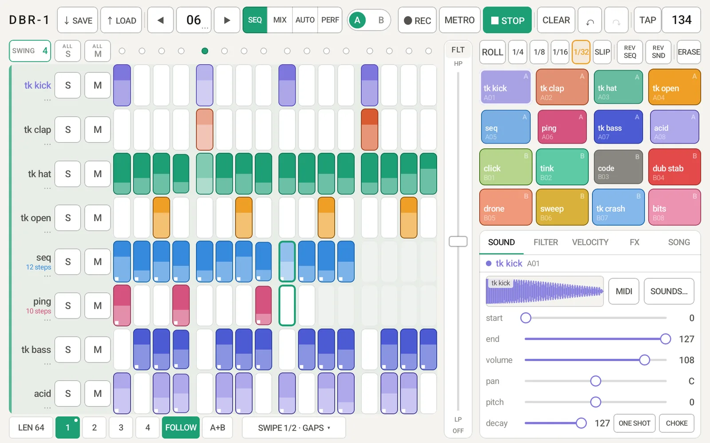
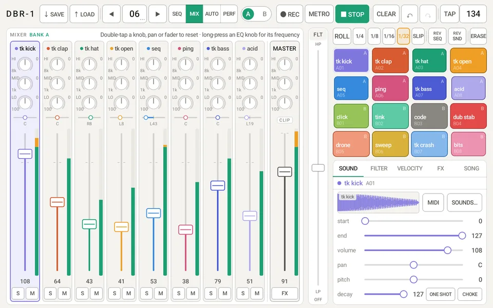
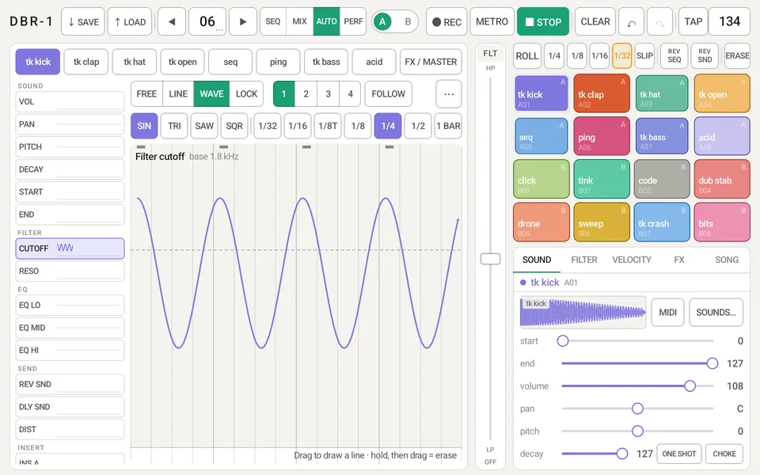
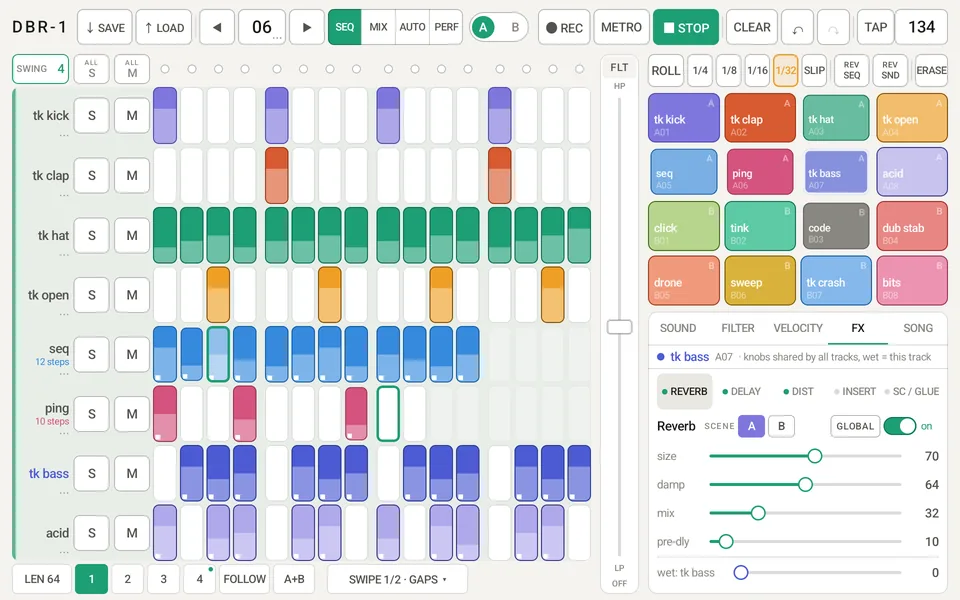
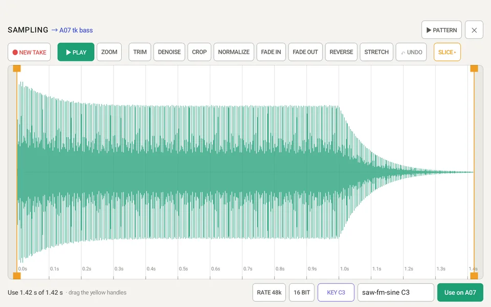
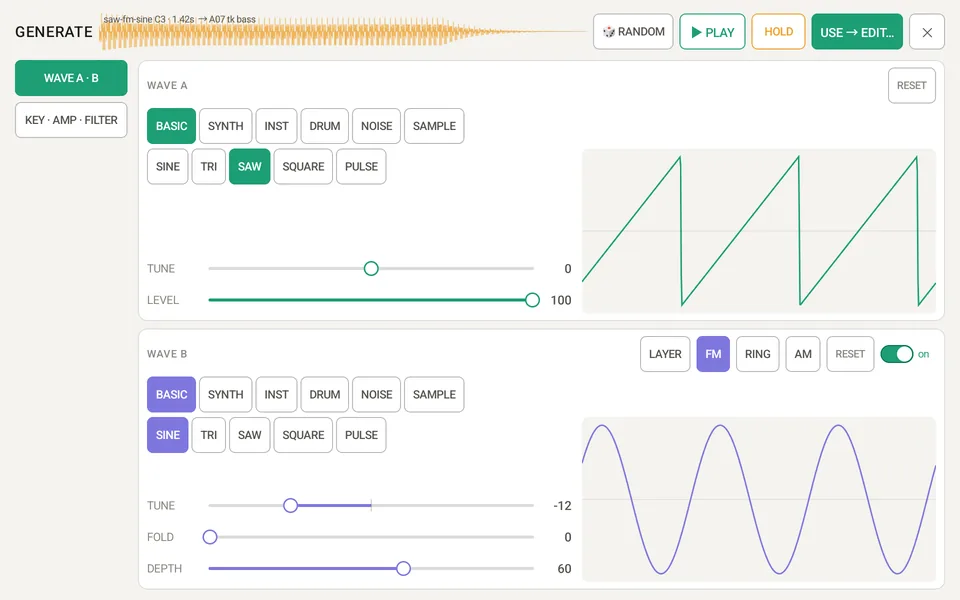
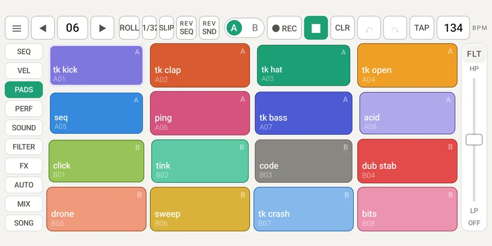

DBR-1
Sampling Rhythm Machine for Android
Android スマホ・タブレットのサンプリング・リズムマシン
なぞって打ち込み、パッドを叩き、自分で録った音で演奏。作ったビートは画面ごと動画にして、そのままシェアできます。
Swipe in beats, play the pads, sample your own sounds and perform live. Record the screen with its sound and share it in a tap.
- 無料 / Free
- 広告なし / No ads
- アプリ内課金なし / No in-app purchases
- アカウント不要 / No account
- ネット接続なし / No internet access

できることFeatures
ステップシーケンサー
16 トラック × 100 パターン、1〜64 ステップ（変拍子も）。なぞって一括入力、ベロシティ・確率・ラチェット、トラックごとの長さ（ポリリズム）と 3 連符、スウィング、ソングモード。
16 tracks × 100 patterns of 1–64 steps. Swipe to fill, velocity, probability and ratchets, per-track lengths and triplets, swing, song mode.
パッドと演奏
16 パッドでリアルタイム録音（カウントイン・メトロノーム）。ROLL・逆再生、ボタン・フェーダー・ノブを自由に並べる PERF 画面。
16 pads with live recording, count-in and metronome. Rolls, reverse, and a PERF screen you lay out yourself.
音とサンプリング
オリジナルの内蔵音 341 音。WAV・MP3 などの読み込み（ステレオのまま）、マイク・オーディオインターフェース・自分の出力から録音、スライス、タイムストレッチ。GENERATE で新しい音も作れます。
341 original built-in sounds. Load your own files (stereo stays stereo), sample from a mic, an interface or DBR-1 itself, slice, time-stretch, and make new sounds with GENERATE.
エフェクトとミキサー
音ごとのフィルターと INSERT、リバーブ・ディレイ・ディストーション、マスターのサイドチェイン・コンプ・EQ、DJ 風の全体フィルター。3 バンド EQ のミキサーとマルチアウト。
Per-sound filter and insert FX, reverb, delay, distortion, master sidechain, comp and EQ, a DJ-style master filter, a mixer with EQ, and multi-out.
オートメーション
ステップごとのパラメーターロック、指で描く線・直線・波形、REC 中のつまみや MIDI CC の記録。
Parameter locks, freehand lines, ramps and waveforms drawn with a finger, and knob / CC recording.
MIDI（USB）
キーボード・パッドで演奏、外部の音源へ送信、MIDI クロックのマスター / スレーブ、CC と LEARN、プログラムチェンジ、MIDI ファイルの書き出し。クロックの正確さも測って公開しています。
Play from controllers, drive external gear, clock master or slave, CC with LEARN, program change, MIDI file export. See how we measured the clock.
録画・書き出し・保存
演奏を画面ごと MP4 に録画（許可不要・指の位置も映る）。WAV / M4A / MP4 / トラックごとのステムで書き出し。プロジェクトは音ごとファイルに保存、自動保存も。
Record the screen with its sound (no permission needed, touches shown). Export WAV, M4A, MP4 or stems. Projects are saved as files with their samples, plus autosave.
タブレットにもスマホにも
タブレットは全体を 1 画面で、スマホは画面を切り替えて同じ操作感で。デモソング 10 曲とテンプレートですぐ始められます。
Everything on one screen on tablets, switchable views on phones. Ten demo songs and genre templates to start from.
画面Screens






動画Videos
使い方のショート動画と、デモソングの演奏を YouTube で公開しています。
Short how-to videos and demo song performances on YouTube.
デモソング 10 曲のプレイリスト（アプリの LOAD → Demo songs… で同じ曲を開いて、中身を見たり鳴らしたりできます） / The ten demo songs. Open them in the app from LOAD → Demo songs… to see how they are made.
説明書Manuals
- クイックスタートはじめての方へ: 1 曲できるまで
- Quick StartFrom your first sound to a finished song
- 取扱説明書すべての機能（日本語）
- User manualEvery feature (English)
- MIDI クロックの正確さしくみ・測った結果・同期のしかた
- MIDI clock timingHow it works, what we measured, how to sync
- テンプレート / TemplatesPERF の背景・ノブ・ボタン・フェーダーを作る PNG / PNGs for your own PERF backgrounds, knobs, buttons and faders